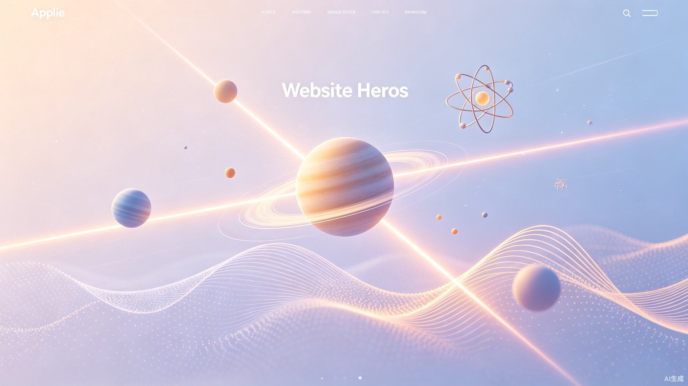

用好奇心打开宇宙的大门。从天空为什么是蓝色，到时间为什么会变慢，物理学让世界的每个角落都充满惊喜。

几个简单的问题，带你感受物理学的魅力
阳光看起来是白色的，实际上它是由红、橙、黄、绿、蓝、靛、紫七种颜色组成的"彩虹混合体"。当阳光穿过大气层时，空气中的氮气和氧气分子会像无数个小弹珠一样，把阳光往各个方向散射。蓝光波长较短，更容易被散射到四面八方，于是整个天空就呈现出蓝色。而波长较长的红光则更容易穿透大气层，所以日出日落时，阳光斜射穿过更厚的大气，蓝光被散射殆尽，剩下的红橙光就把天空染成了绚丽的暖色。
当过山车在高空翻转时，你会担心它掉下来吗？其实，物理学早就为它上了"保险"。在最高点，过山车的速度刚好足够，让它在重力把它拉下来之前，就已经沿着轨道往前飞了一段距离。想象你用水桶装满水，在头顶快速转圈——只要转得够快，水就不会洒出来。过山车也是同样的道理，这叫做"向心力"：轨道或座椅在推动过山车（和你）做圆周运动，而你的感觉就像被一只无形的大手按在了座位上。
你小时候有没有玩过磁铁，感受过那种"隔空取物"的神奇？磁铁周围存在着一种我们看不见的东西，叫做"磁场"。你可以把它想象成池塘里的涟漪——磁铁就像一块投入水中的石头，在它周围形成了一圈圈看不见的"力场"。当另一块铁靠近时，就被这些涟漪推拉着移动。更神奇的是，地球本身就是一块大磁铁，指南针之所以能指北，就是因为指针被地球磁场轻轻牵引着。
从日常生活到宇宙深处，物理学是所有自然科学的基石
物理学不只是实验室里的瓶瓶罐罐和黑板上的公式，它是我们理解这个世界最基本的语言。当你踢一脚足球，是力学在支配它的轨迹；当你打开空调享受凉风，是热力学在搬运热量；当你用手机刷短视频，是电磁学在传递信号；而 GPS 卫星能够精确定位你的位置，则需要爱因斯坦的相对论来修正时间误差。
可以说，现代文明的每一个角落都镌刻着物理学的印记。医学影像的 X 射线、清洁能源的太阳能电池、连接全球的光纤通信、探索火星的航天器——这些看似毫不相关的技术，背后都遵循着同样的自然法则。
更重要的是，物理学教会我们一种思维方式：观察现象，提出假设，验证猜想，修正认知。这种科学思维不仅能帮你理解宇宙，也能帮你做出更理性的决策。学习物理学，不是为了成为科学家，而是为了成为一个更清醒、更好奇的观察者。
点击下方卡片，开始你的物理学之旅